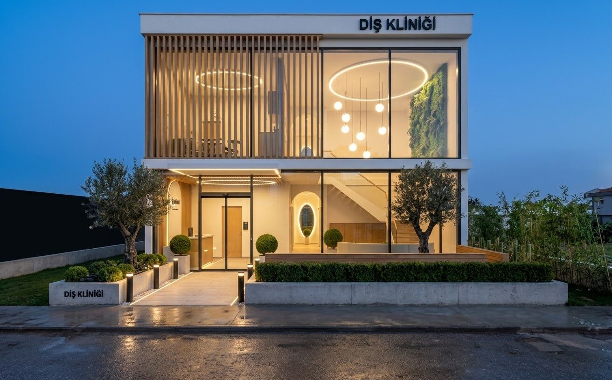
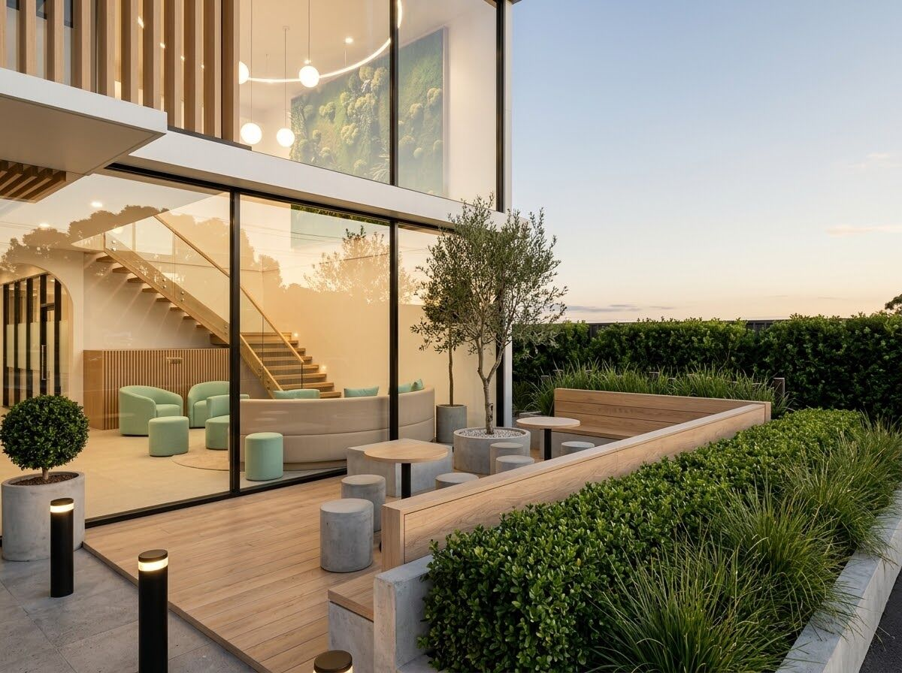
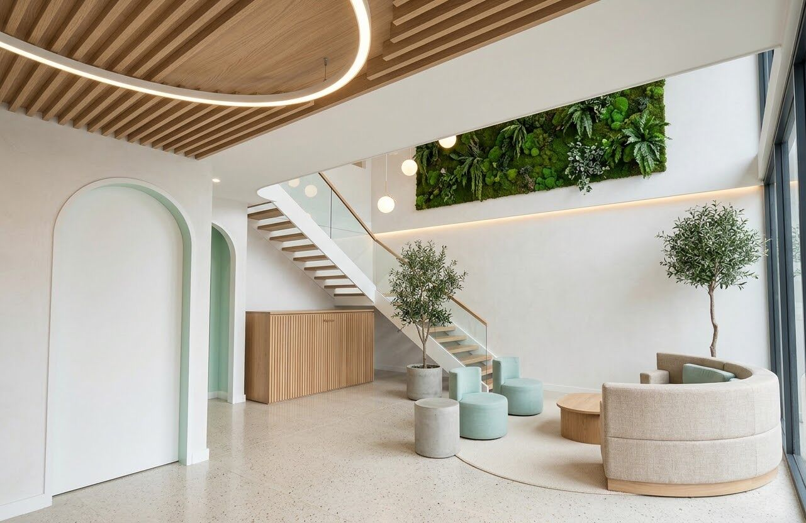

Diş Kliniği Nasıl Açılır? Poliklinik ve Merkez İçin Kurallar ve Süreç
26 Kasım 20269 dk okumaKC Mimarlık

Birden fazla diş hekimiyle çalışan, kendi röntgen birimi olan, hastalarına tek çatı altında kapsamlı tedavi sunan bir klinik açmak; doğru yer seçimi, mevzuata uygun bir proje ve iyi planlanmış bir ruhsat süreci gerektirir. Bu yazıda ağız ve diş sağlığı polikliniği ve merkezi açmak isteyen diş hekimleri için kuralları ve süreci özetliyoruz. Tek hekimli muayenehane için ayrı bir rehberimiz var: Diş Hekimi Muayenehanesi Nasıl Açılır?
Bu yazı genel bilgilendirme amaçlıdır. Mevzuat zaman zaman değişebilir; başvuru öncesinde güncel yönetmeliği ve il sağlık müdürlüğünün istediği belgeleri mutlaka teyit edin.
1. Ağız ve diş sağlığı kuruluşu türleri
Özel ağız ve diş sağlığı kuruluşları, Sağlık Bakanlığı'nın Ağız ve Diş Sağlığı Hizmeti Sunulan Özel Sağlık Kuruluşları Hakkında Yönetmelik ile düzenlenir. Yönetmelikte dört tür kuruluş tanımlanır:
Muayenehane: Bir diş hekiminin kendi adına açtığı kuruluş.
Poliklinik (ağız ve diş sağlığı polikliniği): Halk arasında “diş kliniği” denilen, birden fazla hekim ve ünitin bulunduğu kuruluşların büyük kısmı bu gruptadır.
Merkez (ağız ve diş sağlığı merkezi – ADSM): Daha büyük ölçekli, genel anestezi ünitesi gibi ileri birimleri olan kuruluş.
Hastane: Ağız ve diş sağlığı hastanesi.
Hangi türü açacağınız; hekim sayısı, ünit sayısı, sunmak istediğiniz hizmetler (ör. sedasyon veya genel anestezi altında tedavi) ve bütçenize göre belirlenir. Bu karar, ihtiyaç duyacağınız alanı ve dolayısıyla yer seçimini de doğrudan etkiler.
2. Kimler açabilir?
Muayenehane yalnızca diş hekiminin kendi adına açılabilir; şirket tarafından muayenehane açılamaz. Poliklinik ve merkezler ise yönetmelikte belirtilen şartlarla diş hekimleri veya diş hekimi ortaklığı bulunan şirketler tarafından açılabilir. Ortaklık yapısını kurmadan önce güncel yönetmelikteki hisse ve mesul müdür şartlarını kontrol etmek gerekir.
3. Yer seçimi: bina, tapu ve kat mülkiyeti
Klinik açarken en sık yapılan hata, mekânı kiraladıktan ya da satın aldıktan sonra mevzuata uygun olmadığını fark etmektir. Kira sözleşmesi imzalamadan önce şunlara mutlaka bakın:
Kat Mülkiyeti Kanunu 24. madde: Kat mülkiyetine tabi bir binada, tapu kütüğünde mesken, iş veya ticaret yeri olarak gösterilen bağımsız bölümde hastane, dispanser, klinik, poliklinik, ecza laboratuvarı gibi müesseseler kurulamaz. Bu nedenle sıradan bir apartman dairesi ya da dükkân, poliklinik için genellikle uygun değildir; poliklinik niteliğinde olmayan muayenehaneler ise bu yasağın dışındadır.
Bina durumu: Muayenehane ve poliklinik müstakil binalarda veya hizmet birimleri bütünlük oluşturacak şekilde binaların bir kısmında kurulabilir.
Yapı kullanma izin belgesi (iskân): Binanın iskânı olmalıdır. 1 Ocak 2019'dan önce iskân almış binalar ve yapı kayıt belgeli binalar için deprem dayanıklılık raporu istenebilir.
Yangın güvenliği: Yangına karşı gerekli tedbirlerin alındığını gösteren belgeler istenir.
İmar kullanım kararı: Parselin imar planındaki kullanım amacının sağlık tesisine uygun olup olmadığı kontrol edilmelidir.
Erişilebilirlik: Asansör, rampa ve giriş kotu; engelli ve yaşlı hastaların rahat ulaşımı için önemlidir.

Giriş, hastanın klinikle ilk temas noktasıdır; erişilebilir ve davetkâr olmalıdır.
4. Fiziki şartlar
Yönetmelik, her kuruluş türü için asgari fiziki standartlar belirler. Öne çıkanlar şunlardır:
Genel: Hastaların ve personelin kullandığı tüm alanlar uygun şekilde havalandırılmalı ve yeterli aydınlatılmalı; ısıtma-soğutma sistemleriyle iklimlendirilmelidir. Tüm oda ve birim kapılarında, odanın ne amaçla kullanıldığını gösteren tabela bulunur. Yönetmeliğin ekinde yer alan asgari tıbbi cihaz ve donanımın bulundurulması zorunludur.
Muayene odaları: Her muayene odası en az 12 m² olmalı, hasta mahremiyeti için ses ve görüntü açısından gerekli düzenlemeler yapılmalı, lavabo bulunmalı; bir odada en fazla bir diş üniti yer almalıdır.
Poliklinikte bekleme salonu: İki diş üniti için en az 15 m²; ilave her ünit için bekleme salonuna 5 m² eklenir.
Poliklinikte dental radyoloji: Polikliniklerde dental radyoloji birimi bulunması zorunludur. Röntgen cihazları için Nükleer Düzenleme Kurumu'ndan (NDK) lisans alınması gerekir.
Sedasyon ve genel anestezi: Poliklinik ve muayenehanelerde sedasyon veya genel anestezi altında tedavi yapılamaz.
Merkezlerde: Bekleme salonu daha büyük tutulur (2024 değişikliğine göre 15 diş üniti için toplamda en az 130 m², üzerindeki her ünit için +5 m²). Genel anestezi müdahale ünitesi bulunması zorunludur. Ayrıca kirli malzeme girişi-yıkama, ön hazırlık-paketleme ve steril depo bölümlerinden oluşan merkezî sterilizasyon ünitesi kurulmalı veya sterilizasyon hizmet alımıyla karşılanmalıdır.
Bu rakamlar asgari şartlardır. Konforlu bir klinik için genellikle daha geniş bekleme ve dolaşım alanları, personel odası, depo, arşiv ve teknik hacimler de planlanır.
5. Ön izin ve ruhsat süreci
Ön değerlendirme ve yer seçimi: Tapu niteliği, iskân, imar durumu ve alan yeterliliği kontrol edilir.
Ön izin: Poliklinikler için il sağlık müdürlüğü, merkez ve hastaneler için Bakanlık tarafından ön izin belgesi düzenlenir. Poliklinik başvurusunda belgelerde eksik yoksa ön izin belgesinin en geç 15 iş günü içinde düzenlenmesi öngörülüyor.
Proje ve uygulama: Alanların ne amaçla kullanılacağını gösteren, yetkili mimar onaylı 1/100 veya 1/50 ölçekli mimari planlar hazırlanır; tadilat ve donanım işleri ön izne uygun şekilde tamamlanır.
Ruhsat başvurusu: Yatırımını ön izne uygun tamamlayan kuruluş, yönetmeliğin ekindeki belgelerle il sağlık müdürlüğüne başvurur. Bu belgeler arasında yapı kullanma izin belgesi, vergi levhası, mimari planlar ve röntgen cihazlarına ait NDK lisansı yer alır.
Yerinde inceleme ve ruhsat: İnceleme komisyonu kuruluşu yerinde denetler; uygun bulunursa ruhsat ve faaliyet izin belgesi düzenlenir.
Ön izin almadan tadilata başlamak, sonradan proje değişikliği ve ek maliyet riskini artırır. Mimari planların en baştan yönetmelik şartlarına göre hazırlanması, süreci belirgin şekilde hızlandırır.
6. Klinik tasarımında dikkat edilecekler
Mevzuata uygunluk işin başlangıcıdır; iyi bir diş kliniği aynı zamanda hastanın kaygısını azaltan ve hekimin işini kolaylaştıran bir mekândır:
Hasta yolculuğu: Giriş, karşılama, bekleme, muayene ve çıkış akışı net olmalı; hasta, tedavi alanlarının arka planını (sterilizasyon, depo) görmemelidir.
Kirli–temiz ayrımı: Kullanılmış malzemenin sterilizasyona gidişi ile steril malzemenin odalara dönüşü birbirine karışmamalıdır.
Teknik altyapı: Kompresör ve aspirasyon motorları için gürültüsü yalıtılmış teknik oda, ünitlere giden su, hava ve atık hatları, yeterli elektrik kapasitesi baştan planlanmalıdır.
Radyoloji: Röntgen ve tomografi odalarının radyasyondan korunma şartlarına uygun tasarlanması gerekir.
Atmosfer: Doğal ışık, akustik konfor, bitkiler ve sıcak malzemeler; hastanın kendini hastanede değil, güvenli ve sakin bir yerde hissetmesini sağlar.
Hijyen: Kolay temizlenen, derzsiz ve dayanıklı yüzeyler; gizli ama ulaşılabilir depolama.

Yaşayan yeşil duvar, doğal ışık ve yumuşak dokularla hasta kaygısını azaltan bir bekleme salonu.
Tasarladığımız bir diş kliniği projesini 360° sanal turla gezebilir, anahtar teslim tamamladığımız BKC Diş Kliniği projesini inceleyebilirsiniz.
Kat Mülkiyeti Kanunu'nun 24. maddesine göre, tapuda mesken, iş veya ticaret yeri olarak kayıtlı bağımsız bölümlerde klinik ve poliklinik kurulamaz. Poliklinik niteliğinde olmayan muayenehaneler ise bu yasağın dışındadır. Poliklinik için genellikle müstakil bina veya mevzuata uygun nitelikte bir yapı gerekir.
Polikliniğe röntgen koymak zorunlu mu?
Evet. Yönetmeliğe göre polikliniklerde dental radyoloji birimi bulunması zorunludur ve röntgen cihazları için NDK lisansı gerekir.
Diş kliniğinde sedasyon yapılabilir mi?
Poliklinik ve muayenehanelerde sedasyon veya genel anestezi altında tanı ve tedavi işlemleri yapılamaz; bu işlemler için genel anestezi ünitesi bulunan merkez veya hastane gerekir.
Klinik projesine ne zaman başlamalıyım?
İdeal olan, kira sözleşmesini imzalamadan önce mekânı bir mimara inceletmek ve ön izin başvurusunda kullanılacak planları yönetmeliğe göre hazırlatmaktır.
Bu konuda profesyonel destek almak isterseniz Diş Kliniği projemiz sayfasını inceleyebilirsiniz.
Projenizi konuşalım
Arsanızı, binanızı ya da hayalinizdeki mekânı anlatın; size nasıl bir yol izleyebileceğimizi birlikte konuşalım.